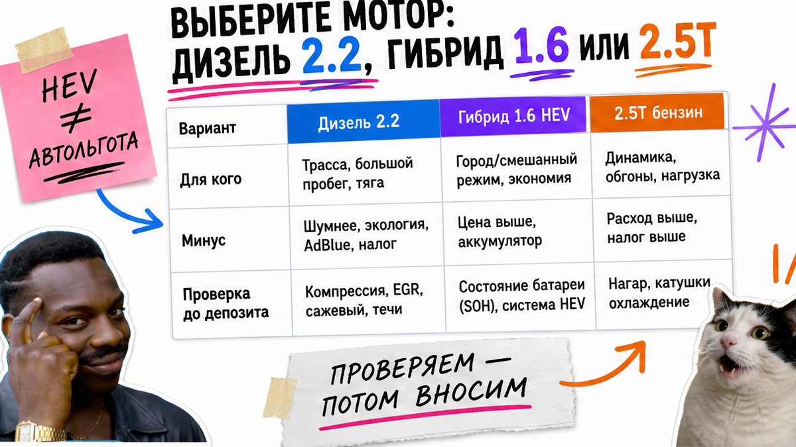
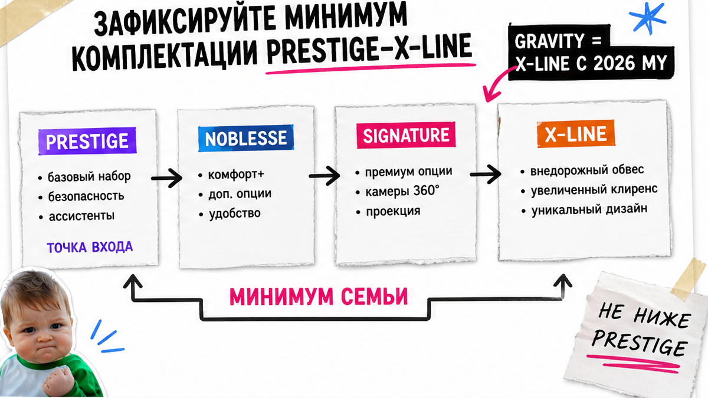

Папа из Новосибирска почти отправил депозит за белый Kia Sorento Signature "как у соседа" – а в отчёте всплыли аренда, передний привод вместо нужного полного и пять мест вместо шести. Знакомая боль: хочется семейный киа соренто из кореи, но в карточке Encar мешаются дизель, гибрид, Prestige–X-Line и 2WD/4WD. Ниже – бриф семьи, выбор мотора и комплектации, затем чек-лист из 12 пунктов до любого перевода.
TL;DR / Быстрый инсайт: Сначала лист "моя версия" (мотор, места, привод, минимум trim), потом лот, потом депозит. Gravity с 2026 MY – это X-Line, не "другая машина". Гибрид не равен автоматической льготе: смотрите мощность ДВС в карточке и считайте в каталоге. Красный флаг Trust Encar / Carhistory – стоп депозита.
Sorento поколения MQ4 – семейный кроссовер между Sportage и Carnival: пять–семь мест и привычная логистика через Владивосток. Мы в Авто-Сейлс не публикуем "магическую сумму под ключ": курс плывёт. Зато даём порядок действий, чтобы не купить глазами красивую карточку.
Типичная ошибка – открыть Encar и влюбиться в фото. На практике сначала закрывают сценарий семьи, потом фильтруют объявления. Иначе сравниваете чужие прайсы, а не свою версию.
Запишите на листе или в заметках четыре пункта – это ваш фильтр, а не "посмотрим по настроению".
Делать: держать бриф рядом с экраном, пока листаете Encar. Не делать: менять места и привод "потому что этот лот красивее" – так и ловят депозит не на ту версию.
Схема до ставки:
Бриф семьи → Мотор по сценарию → Минимум комплектации → Фильтр Encar → Trust Encar / Carhistory → Чек-лист 12 пунктов → Депозит

На пальцах три рабочих варианта, которые реально смотрят под заказ из Кореи в 2026.
| Мотор | Ориентир по каталогам Kia KR | Кому обычно подходит | Что проверить в карточке |
|---|---|---|---|
| Дизель 2.2 | ~202 ps, 8DCT; часто на б/у Encar | Трасса, дальние поездки, привычная тяга | Топливо diesel, поколение MQ4 |
| Гибрид 1.6T HEV | ~180 ps ДВС + электромотор ~47.7 kW, 6AT | Город, тише старт, меньше "рыков" в пробке | Мощность ДВС для расчёта, не миф о льготе |
| Бензин 2.5T | ~281 ps, 8DCT | Динамика и запас на обгоны | Топливо gasoline / turbo, комплектация |
Например, если семья ездит по трассе на дачу, дизель 2.2 часто закрывает задачу без гонки за "самым новым" гибридом. Если в рекламе пишут "гибрид = льготный утиль", не копируйте чужие калькуляторы: у Sorento HEV мощность ДВС около 180 л.с. – сверьте цифру в карточке и отправьте параметры на расчёт в каталоге до депозита.
Делать: выбрать мотор под сценарий езды, записать мощность ДВС. Не делать: выбирать гибрид только потому, что в чужой статье обещали "выгоднее по таможне".

Корейские названия проще, если перевести на язык семьи. Линейка Kia Korea: Prestige → Noblesse → Signature → X-Line. С 2026 MY прежний Gravity переименован в X-Line – дизайн-пакет, не другая модель. В старых объявлениях Encar ещё пишут Gravity, в новых – X-Line.
| Уровень | Что обычно даёт семье | Когда хватает |
|---|---|---|
| Prestige | Базовый комфорт и ADAS-набор поколения | Нужен рабочий семейный SUV без "всех опций" |
| Noblesse | Больше удобств салона и помощников | Хотите запас опций "на вырост" |
| Signature | Топовый комфорт в классической линии | Важны сиденья, материалы, полный пакет |
| X-Line | Внешний/дизайн-акцент (бывший Gravity) | Нужен именно этот вид, не "другая техника" |
Делать: записать в бриф минимум (например, "не ниже Noblesse"). Не делать: путать X-Line с отдельным поколением или отказываться от лота только из-за слова Gravity в старой карточке.
Шесть мест – не "урезанные семь". Обычно это отдельные кресла второго ряда ("капитанские") и проход к третьему ряду. Семь – диван второго ряда плюс третий ряд. Пять – без третьего ряда; багаж больше, но всех родственников уже не усадите.
Полный привод в Корее часто опция. Если в брифе зима – в карточке явно ищите 4WD. Если написано 2WD, это передний привод, даже если фото "как у соседа с полным".
Делать: в фильтре Encar сразу выставить число мест и привод из брифа. Не делать: надеяться, что "на фото третий ряд есть, значит семь мест" – сверяйте текст опций и инспекцию.
Encar – корейская площадка объявлений. Trust Encar и Carhistory – про историю: аренда, такси, страховые случаи, пробег, смена владельцев. На пальцах: фото салона не равны проверке.
В реальном проекте подбора красный флаг один критичный уже повод поставить лот на паузу. Два и больше – депозит не переводят, идут за пересчётом и проверкой.
Делать: требовать пакет отчётов до любого перевода. Не делать: верить скрину "без ДТП" без VIN и даты в кадре.
Актуальный расчёт под ваши параметры и живые лоты – в каталоге avto-sales125.ru. Форм на этой странице нет: цифры живут там, где их можно обновить.
Это ваш критерий результата: есть заполненный лист "моя версия" и по выбранному лоту отмечены зелёные/красные пункты. Если красных критичных больше одного – депозит не переводите.
Делать: идти сверху вниз и ставить галочки на бумаге. Не делать: пропускать привод и места ради "красивого Signature" – именно здесь чаще всего ломается ожидание семьи.
Нужен разбор конкретной карточки – напишите в Telegram avtosales125. Подбор и пересчёт без готовых сумм из чужих статей – в каталоге Авто-Сейлс.
Материал проверен: редакция Авто-Сейлс (эксперты по авто под заказ из Японии, Кореи и Китая).
Достоверность: факты сверены с материалами Kia Korea (price/spec), релизом Hyundai Motor Group о The 2026 Sorento (Gravity → X-Line), Carhistory и практикой чтения Encar; актуальные расчёты – в каталоге.
Дизель 2.2 чаще берут за тягу и длинные трассы, гибрид 1.6 – за городской ритм. Для таможни и утиля смотрите мощность ДВС в карточке и считайте актуально в каталоге: готовые суммы из чужих статей не копируйте, особенно миф "гибрид всегда льготный".
Семьи обычно стартуют с Noblesse или Signature, если нужен запас опций. Prestige берут, когда важна сама машина, а не полный пакет. X-Line (бывший Gravity) выбирают ради внешнего вида – зафиксируйте минимум в брифе до фильтра Encar.
Полный VIN, совпадение пробега, число мест, 2WD/4WD, комплектацию и историю использования. Затем Trust Encar / Carhistory: аренда, такси, крупные страховые, тотал, затопление. Нет пакета – нет перевода.
Нужны отдельные кресла второго ряда и удобный проход – смотрите 6 мест. Нужен диван "трое сзади" плюс третий ряд – 7. Сверяйте опцию в тексте карточки, а не только фото салона.
Нет. Во многих лотах стоит 2WD. Если зима и полный привод обязательны – внесите 4WD в бриф и в фильтр до ставки, иначе рискуете купить "не ту" версию.
Да, как старому имени X-Line с 2026 MY. Это не другое поколение. Сверяйте остальное: мотор, места, привод и отчёты – название пакета само по себе не красный флаг.
В каталог Авто-Сейлс с параметрами лота и мощностью ДВС, детали заказа – в Telegram avtosales125. На странице блога форм нет: так цифры не устаревают вместе с текстом.